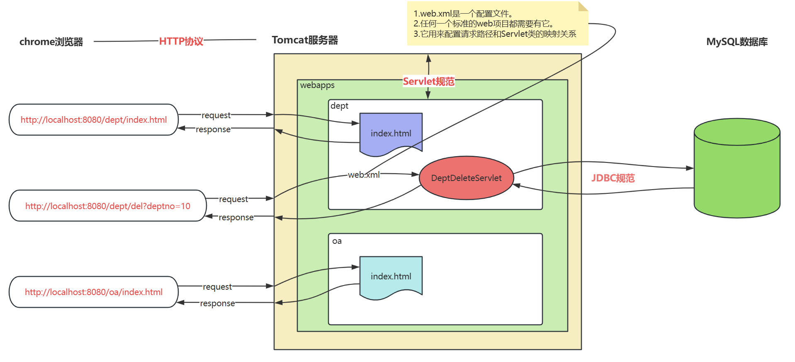
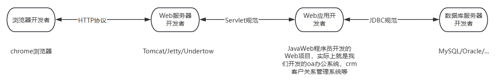

我的理解：简单来讲就是每一波开发人员彼此通过协议连接从而实现解耦合。比如tomcat和webapp开发者解耦合，webapp可以跑在别的服务器上，只要遵循tomcat就行。
详细图
1. 请求index/html，是请求静态资源，一个网页
2. 请求DeptDeleteServlet，是请求java程序，java程序可以去访问数据库

简略图

4 个角色
3 个协议
Servlet定义的具体内容
jakarta.servlet.Servlet、jakarta.servlet.ServletRequest、jakarta.servlet.ServletResponse。Tomcat 服务器面向接口调用和实现。JavaWeb 程序员也面向这些接口调用和实现。这样 Web 服务器和 Web 应用就达到了解耦合。我们来模拟一下 Servlet 接口，更好的理解 Servlet 的本质及实现原理。
这个就是最核心的，服务器和webapp开发者共同的知识：任何的handler都有service函数
package jakarta.servlet;
public interface Servlet{
// 处理请求的核心方法
void service();
}
webapp开发者，创建两个 Servlet 实现类：
package com.jkweilai.servlet;
import jakarta.servlet.Servlet;
public class LoginServlet implements Servlet{
public void service(){
System.out.println("正在处理用户的登录请求...");
}
}
package com.jkweilai.servlet;
import jakarta.servlet.Servlet;
public class DeptDeleteServlet implements Servlet{
public void service(){
System.out.println("正在删除部门信息...");
}
}
然后创建 url 和 实现类的对应关系，假设用一个配置文件来保存，web.properties
/login=com.jkweilai.servlet.LoginServlet
/del=com.jkweilai.servlet.DeptDeleteServlet
创建一个程序模拟 Tomcat 服务器：通过 Scanner 接收一个字符串，当作url，然后去返回对应的 Servlet 实现类
package org.apache.catalina.startup;
import java.util.Scanner;
import java.util.ResourceBundle;
import jakarta.servlet.Servlet;
public class Bootstrap{
public static void main(String[] args) throws Exception{
System.out.println("Tomcat服务器启动成功，开始接收用户请求...");
ResourceBundle bundle = ResourceBundle.getBundle("web");
Scanner s = new Scanner(System.in);
while(true){
System.out.print("请输入请求路径：");
String url = s.next();
String servletClassName = bundle.getString(url);
Class clazz = Class.forName(servletClassName);
Servlet servlet = (Servlet)clazz.newInstance();
// 服务器开发者确定这个类一定会实现service
servlet.service();
}
}
}